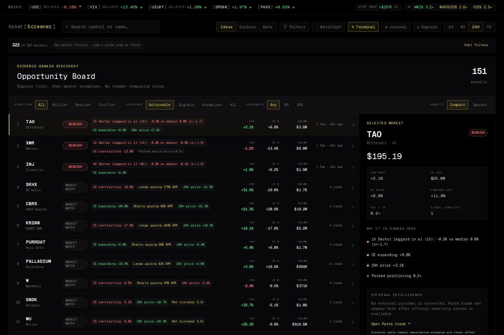
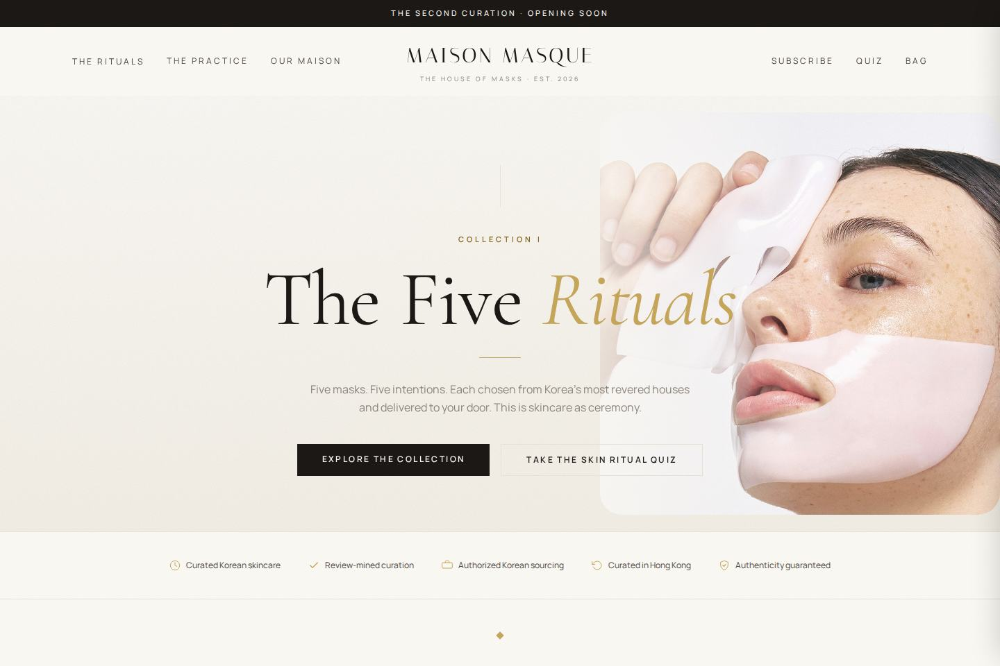
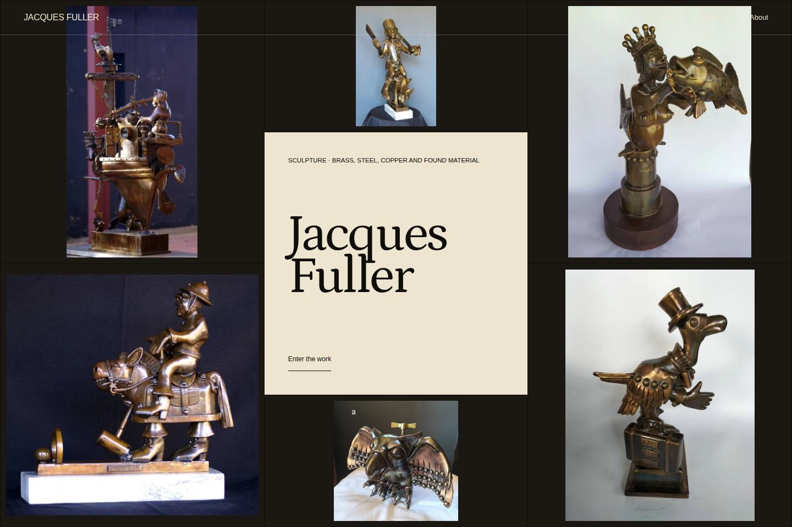
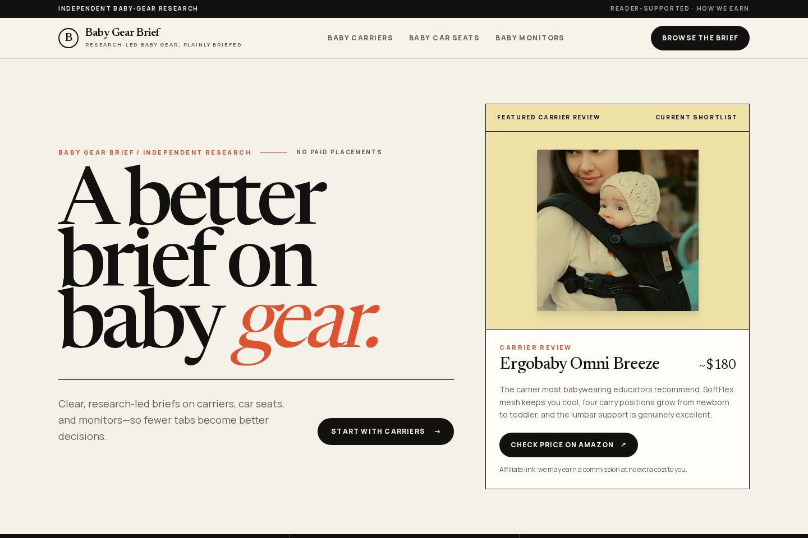
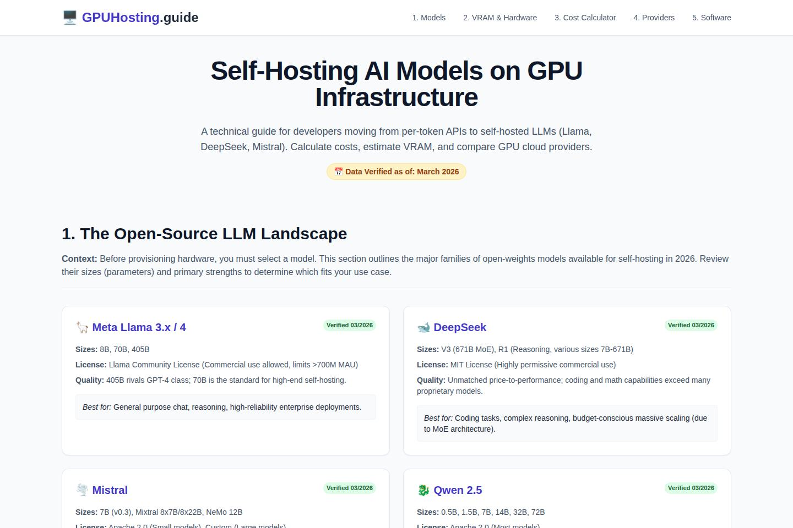
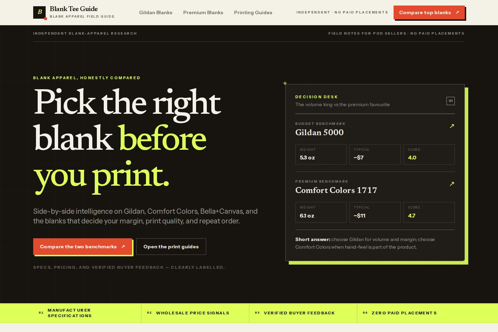
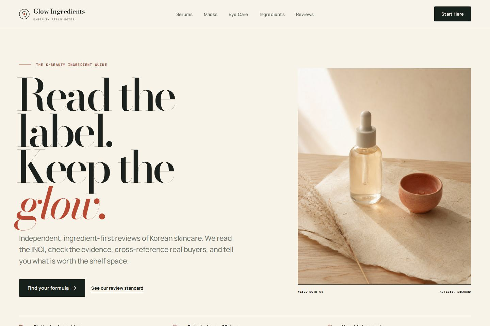
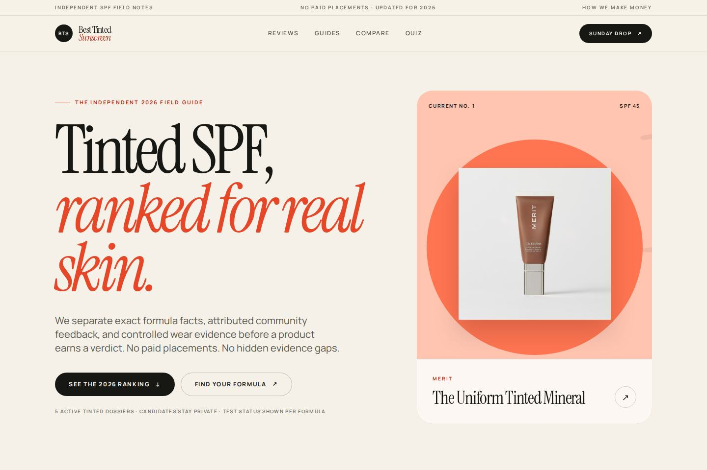
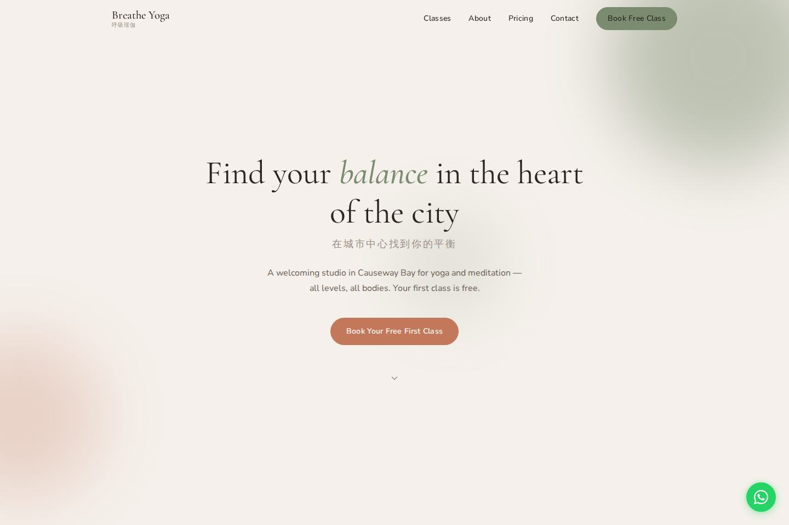

Frame釐清
Define what the site must do, who it serves, and what proof it needs.定義網站需要完成甚麼、服務誰，以及需要哪些證據。
Lekker builds commerce, publications, portfolios, and digital products, each with its own visual logic. Lekker 打造電商、內容刊物、作品集及數碼產品，每個項目都有自己的視覺邏輯。


The artifact leads. The studio claim comes after.先看實際作品，再談工作室本身。



The visual system follows the job, the audience, and the proof each site needs.視覺系統跟隨任務、受眾，以及每個網站所需的證據。
Product worlds that connect discovery, trust, and purchase without flattening the brand.連結產品探索、信任及購買，同時保留品牌個性的產品世界。
View work瀏覽作品Editorial systems that help readers compare evidence and act with confidence.協助讀者比較證據並有信心作出行動的內容系統。
View work瀏覽作品Useful interfaces that make complex information easier to scan, understand, and use.讓複雜資訊更容易瀏覽、理解及使用的實用介面。
View work瀏覽作品Focused viewing rooms that keep the artist, object, or practice in control.讓藝術家、作品或創作實踐保持主導的專注觀看空間。
View work瀏覽作品Enough structure to stay aligned. Enough room to make the work specific.有足夠結構保持方向一致，也有足夠空間做出真正具體的作品。
Define what the site must do, who it serves, and what proof it needs.定義網站需要完成甚麼、服務誰，以及需要哪些證據。
Build the visual system, content hierarchy, responsive layouts, and working interactions.建立視覺系統、內容層次、響應式版面及可用互動。
Test the real page across devices, fix what breaks, and prepare it for launch.在不同裝置測試真實頁面，修正問題，並為上線做好準備。
Live products and concept studies stay clearly labeled in the full archive.完整作品庫清楚標示現有產品及概念研究。
View the work瀏覽作品



Tell us what it needs to do. We will work out what it should become.告訴我們它需要完成甚麼。我們會一起找出它應該成為甚麼。